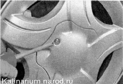

Колесо - заменаДля выполнения работы потребуются: - «баллонный» или торцовый ключ на 17 мм; - домкрат; - противооткатные упоры; - опора под домкрат (если машина стоит на рыхлом грунте). Последовательность выполнения 1. Устанавливаем автомобиль по возможности на ровной горизонтальной площадке. Если в салоне автомобиля находятся пассажиры, их следует высадить. 2. Вынимаем из багажного отделения запасное колесо и необходимый инструмент. 3. Фиксируем автомобиль стояночным тормозом и устанавливаем под колесо, расположенное по диагонали от заменяемого, с двух сторон противооткатные упоры. 4. Крестовой отверткой отворачиваем винт и снимаем декоративный колпак колеса. 5. «Баллонным» или торцовым ключом на 17 мм ослабляем затяжку всех болтов крепления колеса приблизительно на пол-оборота. Если автомобиль стоит на рыхлом грунте, подложите под домкрат опору, увеличивающую устойчивость домкрата (например, доску подходящего размера). 6. Устанавливаем под порог автомобиля домкрат. Верхняя площадка домкрата должна быть установлена под специальным кронштейном, приваренный к порогу кузова . При этом нижняя опорная площадка домкрата должна находиться строго под верхним упором. 7. Плавно поднимаем автомобиль, одновременно проверяя отсутствие его перемещения вперед или назад. Подъем производим до тех пор, пока заменяемое колесо автомобиля не окажется на расстоянии 2—3 см от опорной поверхности. 8. Окончательно выворачиваем болты крепления и снимаем колесо. 9. Устанавливаем запасное колесо на ступицу. Придерживая колесо, предварительно наживляем болты его крепления. 10. Придерживая колесо от вращения, крест-накрест затягиваем болты его крепления. 11. Плавно опускаем автомобиль до плотного касания колеса с опорной поверхностью. Далее полностью опускаем автомобиль на колеса и складываем домкрат. 12. Окончательно затягиваем болты крепления колеса по той же схеме моментом 65,2—92,6 Пм. 13. Укладываем снятое колесо в багажное отделение и надежно закрепляем его. 14. Убираем противооткатные упоры. 15. Проверяем давление в шине и при необходимости доводим его до нормы. |